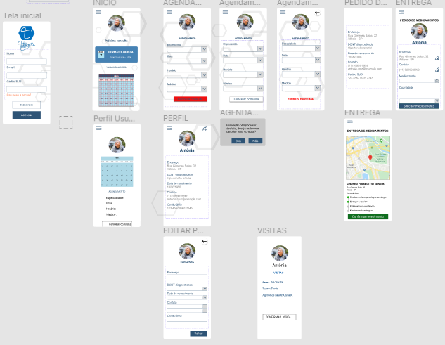

Problema
DCNT - Doenças Crônicas Não Transmissíveis
Doenças cerebrovasculares e cardiovasculares, neoplasias, obesidade, diabetes, hipertensão, doenças respiratórias crônicas, etc.
Problema de saúde de maior magnitude do país!
Causa de cerca de 63% das mortes no mundo em 2008.
72% das causas de mortes no Brasil.
SUS - 2010 - gastos com internações hospitalares DCNT - R$ 2,4 bi (68% do total de gastos) e R$ 1,2 bi (32%) com tratamento ambulatorial.
Os custos dos agravos dessas doenças são mais altos do que aqueles destinados à prevenção das mesmas.
Última década - redução de cerca de 20% na mortalidade - expansão da Atenção Básica
Equipes de saúde: ações de promoção e vigilância em saúde, prevenção, assistência e acompanhamento dos usuários.
Expansão da atenção farmacêutica e distribuição gratuita de mais medicamentos.
PLANO DE AÇÕES ESTRATÉGICAS PARA O ENFRENTAMENTO DAS DOENÇAS CRÔNICAS NÃO TRANSMISSÍVEIS (DCNT) NO BRASIL 2011-2022
Ações:
Medicamentos gratuitos
Espera e filas para receber o medicamento
Dificuldade de locomoção até a UBS
Garantir a integralidade e a continuidade no acompanhamento
Dificuldade de agendamento de consultas
Esquecimento da data da próxima consulta
Atenção Domiciliar
